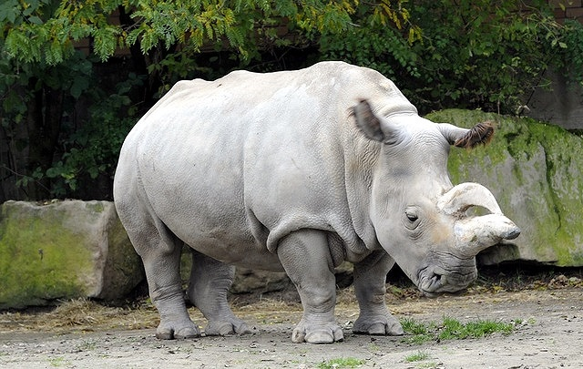

Tê giác là các loài động vật nằm trong số 5 chi còn sống sót của động vật guốc lẻ trong họ Rhinocerotidae. Tất cả năm chi nói trên đều có nguồn gốc ở châu Phi hay châu Á
Sừng tê giác có thành phần cấu tạo tương tự tóc và móng tay con người. Vì thế, y học hiện đại cho rằng nó hoàn toàn không có giá trị y học
Hiện nay trên thế giới chỉ còn 5 loài tê giác
Còn được gọi là tê giác một sừng lớn, chúng sống ở vùng đồi thấp dưới chân dãy núi Himalaya thuộc Nepal và Ấn Độ. Khi trưởng thành, một con tê giác có độ dài toàn thân khỏang 3,5m. Da của chúng gồ ghề nối ghép các miếng lại với nhau trông như một “thảm đinh tán”.

Tê giác Ấn Độ tại vườn quốc gia Kaziranga bang Assam
Tê giác trắng hay tê giác môi vuông (Ceratotherium simum) là một trong năm loài tê giác còn tồn tại và là một trong số rất ít loài động vật ăn cỏ lớn còn tồn tại. Chúng có nguồn gốc ở đông bắc và miền nam châu Phi. Tê giác có xu hướng sống thành bầy đàn từ 1 đến bảy con, mặc dù chúng là những động vật to lớn. Trên mõm của chúng có hai sừng với cấu tạo từ các sợi keratin (không phải xương như ở gạc hươu, nai).
Một con tê giác trắng điển hình với lớp da xám trắng và một cái môi vuông
Sống tập trung ở Đông châu Phi, một phần ở miền Trung châu lục này. Đôi môi của chúng khá nhọn. Da của chúng màu nâu ngả sang đen. Hiện còn khoảng 4.000 con. Tê giác đen sinh nở ít, lại bị săn lùng ráo riết nên nguy cơ tuyệt chủng rất lớn
Tê giác đen chỉ ăn cỏ, các loại lá cây, cành và chồi non. Kể cả cây bụi có gai chúng cũng ăn được. Trên da của tê giác đen, sinh sống và ẩn náu nhiều loại động vật ký sinh. Khoảng đến năm thứ 5, tê giác cái bước vào tuổi sinh sản; trong khi con đực phải đến năm thứ 8 mới trưởng thành
Một cá thể tê giác xuất hiện tại khu bảo tồn ở Châu Phi
Sống tập trung tại Đông Nam Á. Loài này cũng có 2 sừng, là loài tê giác có nhiều lông nhất. Do sự săn bắn, giết hại quá dữ dội, hiện loài này chỉ còn khoảng hơn 200 con, đã rơi vào tình thế cực kỳ nguy cấp trong Sách đỏ của Liên minh Bảo tồn thiên nhiên quốc tế
Tê giác mẹ Ratu và tê giác con bốn ngày tuổi Andatu tại Khu bảo tồn Tế giác Sumatra ở Indonesia
Là loài tê giác 1 sừng, dài khoảng 20cm. Chiều dài toàn thân khoảng 3m. Người ta cho rằng, hiện chỉ còn 40 con tê giác Java sống tại một vườn quốc gia nhỏ ở Indonesia. Những nghiên cứu đầu tiên về loài tê giác này xuất hiện vào năm 1787, khi hai con vật bị bắn chết tại Java. Nhà tự nhiên học người Đức Petrus Camper (mất năm 1789) đã coi chúng là một loài riêng biệt.
Một chú tê giác đang tắm bùn ở Vườn quốc gia Ujung Kulon